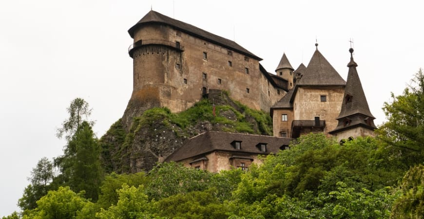
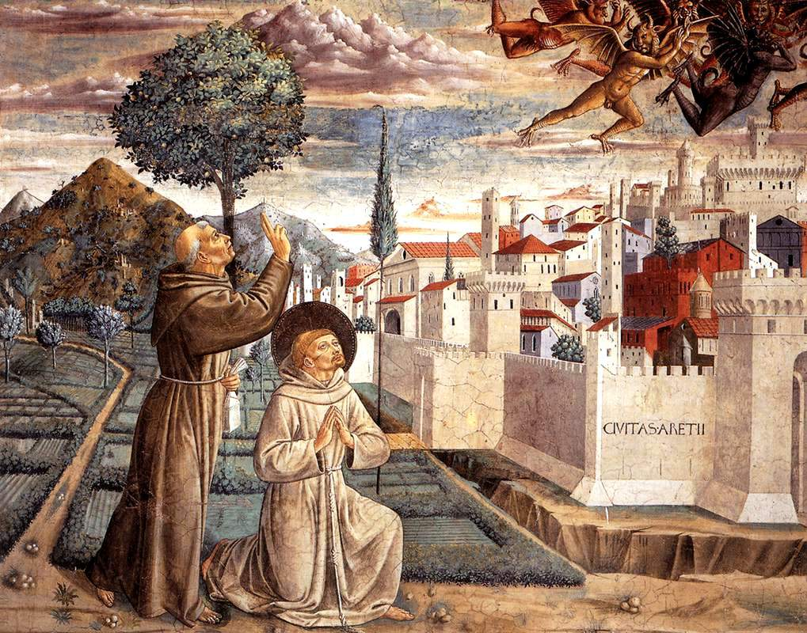

A arte medieval abrange um longo período histórico, que vai do século V ao XV,
englobando diversas expressões artísticas e estilos que se desenvolveram na Europa após a queda do
Império
Romano do Ocidente.
Durante esses mil anos, a arte medieval foi fortemente influenciada pela religião, em especial pelo
cristianismo,
que moldou a estética, os temas e os objetivos das obras de arte desse período.

Como e quando Surgiu? primeiros vestígios
A arte medieval surgiu após a queda do Império Romano do Ocidente, no século V, e se desenvolveu até o
final do século XV.
Este período é conhecido por uma transição significativa na cultura europeia,
marcada pela influência crescente do cristianismo e a formação de novas estruturas sociais e políticas.
A arte medieval é caracterizada pela fusão de tradições romanas e germânicas,
além da introdução de novas formas e estilos que refletiam as mudanças religiosas e culturais da
época.

Características da Arte Medieval
A arte medieval abrange um longo período histórico, que vai do século V ao XV,
englobando diversas expressões artísticas e estilos que se desenvolveram na Europa após a queda do Império
Romano do Ocidente. Durante esses mil anos,
a arte medieval foi fortemente influenciada pela religião, em especial pelo cristianismo, que moldou a
estética,
os temas e os objetivos das obras de arte desse período.
Influência Religiosa: A religião cristã desempenhou um papel central na arte medieval.
Igrejas, mosteiros, catedrais e capelas foram os principais locais de produção e exposição de arte.
As obras geralmente retratavam temas bíblicos, cenas da vida de Jesus, da Virgem Maria,
santos e eventos religiosos, sendo utilizadas para educar os fiéis e transmitir mensagens espirituais.
Técnicas Artísticas: A arte medieval utilizou diversas técnicas, como mosaicos,
afrescos,
iluminuras (decoração de manuscritos),
esculturas em madeira e pedra, e vitrais.
Cada técnica era adaptada ao propósito e ao contexto em que a obra seria exposta,
como decorar igrejas ou manuscritos religiosos.
Arquitetura Monumental: A construção de igrejas e catedrais foi uma das maiores
expressões artísticas do período.
Elas foram projetadas não apenas como locais de culto, mas também como símbolos do poder e da fé da
Igreja.
As catedrais góticas, por exemplo, são conhecidas por sua altura impressionante e pelo uso inovador de
elementos arquitetônicos,
como os arcos ogivais e os arcobotantes, para permitir a inserção de grandes vitrais.
Escultura e Pintura: As esculturas medievais, muitas vezes integradas à arquitetura
das igrejas,
serviam como elementos decorativos e educativos. A pintura medieval era, em sua maioria,
religiosa, incluindo murais, painéis e iluminuras. No estilo românico, as figuras eram estilizadas e
simbólicas,
enquanto no gótico, tornaram-se mais naturalistas e detalhadas.
Estilos Diversos da Arte Medieval
Arte Bizantina
A arte bizantina foi uma tendência artística desenvolvida durante o Império Bizantino, entre os
séculos V e XV. As expressões artísticas bizantinas tinham um caráter religioso e foram marcadas
pela temática cristã. Devido à influência político-religiosa, a arte bizantina se expandiu para além
dos limites geográficos do Império Romano do Oriente.
Com a temática basicamente religiosa, as manifestações artísticas do Império Bizantino tinham a
função de representar as crenças teológicas. Assim, representavam eventos bíblicos e da vida dos
santos, utilizando as imagens como pontes de contato entre o homem e o divino.
A arte bizantina estava diretamente ligada à religião por isso obedecia ao clero, que tinha, dentre
outras funções, a de organizar as artes. Assim, os artistas bizantinos se tornavam apenas executores
que tinham função de seguir fielmente um padrão e as tradições estabelecidas pela Igreja.
A arte bizantina costumava representar os imperadores com uma auréola sobre a cabeça, sendo também
representados em mosaico juntamente com a Virgem Maria e com o Menino Jesus.
Essa prática se baseava nos ideais do regime teocrático, o qual além dos poderes administrativos, o
imperador possuía poderes espirituais, sendo considerado representante de Deus na Terra.
Arte Românica
Predominante entre os séculos V e IX, o estilo românico prevaleceu na Alta Idade Média e recebeu esse
nome porque estava associado à cultura romana. A arquitetura românica possuía construções feitas em
pedras e tijolos, e o teto feito em madeira.
Devido aos incêndios que atingiam as construções, os tetos de madeiras passaram a ser substituídos
por abóbadas, gerando a necessidade da construção de paredes mais grossas e capazes de sustentar o
peso do teto.
Desse modo, a arquitetura, sobretudo de mosteiros e basílicas, se caracterizou pelo uso de arcos
volta-perfeita e abóbadas. Paredes grossas, poucas janelas e plantas arquitetônicas em formato de
cruz, marcaram a arquitetura românica.
As construções desse estilo revelavam o intuito principal de defesa, tanto as igrejas quanto os
castelos. Com suas paredes grossas, a ideia era que tanto os palácios quanto as igrejas deveriam ser
fortes e resistentes.
Presentes, principalmente, no interior das igrejas e catedrais, as pinturas e esculturas românicas
tinham temática essencialmente didático-religiosas, com produções voltadas para adornar os templos,
bem como para instruir sobre os princípios da fé católica.
Arte Gótica
Apresentando mais leveza e abertura, a arte gótica marcou o período da Baixa Idade Média,
compreendido entre o final do século XII e o século XV. O estilo gótico apresentou uma arquitetura
com edifícios mais altos e menos extensos.
O surgimento das abóbadas de nervuras possibilitou a construção de igrejas mais altas e com longas
torres. Com o uso de pilares, a construção de paredes grossas com janelas estreitas foi dispensada,
dando lugar à construção de paredes com grandes áreas de vitrais coloridos.
A arquitetura das igrejas, dos castelos, das catedrais e dos mosteiros seguiam o mesmo padrão. Todas
eram construídas em formato vertical, com paredes mais finas, com aspecto leve, grande número de
janelas, torres em formato de pirâmide, arcos de volta-quebrada e ogivas.
As construções elevadas e a verticalidade se tornaram as principais características do estilo gótico.
Esse aspecto revelava a força da religiosidade, pois a ideia era a de que quanto mais alto
estivessem, estariam mais perto de Deus.
Merecem destaque também na arquitetura gótica os vitrais feitos de vidros e repleto de cores, que
serviam de entrada de luz e, em sua maioria, representavam temas religiosos.
As pinturas e esculturas góticas, assim como as artes do estilo românico, tinham como principal
temática a religião. No entanto, na escultura gótica, o realismo prevaleceu com a busca por aspectos
reais e humanos das figuras de anjos, santos e personagens bíblicos.
Em relação à pintura gótica, merecem destaque as iluminuras, os vitrais, os painéis e os afrescos. No
final do século XV, a pintura medieval passou a apresentar outras características que não se
observou durante os momentos anteriores. Com características típicas do Renascimento, a pintura
apresentou expressões emotivas e diversidade de cores.
Importância e Legado
A arte medieval estabeleceu as bases para o desenvolvimento dos estilos artísticos que se seguiram, como o
Renascimento. As catedrais góticas, os manuscritos iluminados e os mosaicos bizantinos continuam a ser
admirados por sua complexidade e beleza. Além disso, a arte medieval preservou e transmitiu muitos dos
conceitos e valores da cultura cristã, influenciando profundamente a arte e a arquitetura ocidentais.
A arte medieval também foi inovadora em termos de técnicas e estilos. O uso de vitrais, por exemplo,
transformou as catedrais góticas em ambientes luminosos e espirituais, criando uma atmosfera que evocava a
presença divina. As esculturas tornaram-se mais realistas e expressivas, refletindo uma evolução estética
que marcou uma transição para o Renascimento. Esses avanços não apenas definiram a estética do período, mas
também influenciaram a arte e a arquitetura de épocas posteriores
O legado da arte medieval é visível ainda hoje nos muitos monumentos que sobreviveram, como as catedrais de
Chartres e Canterbury. Eles são considerados patrimônio cultural inestimável e continuam a atrair milhões de
visitantes de todo o mundo. Essas estruturas não apenas refletem a habilidade artística e a engenhosidade
técnica de seus construtores, mas também são símbolos duradouros da identidade e da história cultural
europeia
A arte medieval também continua a inspirar artistas contemporâneos e movimentos modernos. O uso de
simbolismo, a ênfase na espiritualidade e as narrativas visuais complexas da arte medieval influenciaram
profundamente a arte moderna e contemporânea. Portanto, a importância e o legado da arte medieval vão muito
além de seu contexto histórico original, continuando a impactar a cultura visual e o patrimônio global até
os dias de hoje